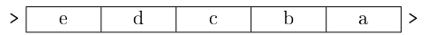
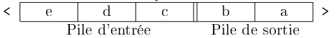

C8 Structures de données linéaires
"Smart data structures and dumb code works a lot better than the other way around."
(in The Cathedral and the Bazaar, 1999)
Cours
Attention
Ce diaporama ne vous donne que quelques points de repères lors de vos révisions. Il devrait être complété par la relecture attentive de vos propres notes de cours et par une révision approfondie des exercices.
Travaux dirigés
Travaux pratiques
 Exercice 1 : Une implémentation des listes de Python en C
Exercice 1 : Une implémentation des listes de Python en C
Le but de l'exercice est d'écrire une implémentation en C des list de Python et des fonctions associés (append et pop), on utilisera pour cela le type structuré suivant :
où le champ current_size contient la taille actuelle de la liste et le champ array est un tableau de longueur max_size (supérieur ou égal à current_size) contenant les éléments de la liste.
-
Ecrire la fonction de création d'une liste en donnant sa taille et une valeur d'initialisation. La signature de cette fonction est donnée ci-dessous :
On initialisera la valeur de la taille maximale à la taille courante.
-
Ecrire une fonction d'affichage pour une liste, on pourra prévoir d'afficher en même temps la taille courante et la taille maximale du tableau. La signature de cette fonction est :
Un exemple d'affichage est donné ci-dessous :
-
Ecrire une fonction append d'ajout d'un élément à une liste de signature :
On remarquera que comme en Python, notre fonction ne renvoie rien mais modifie la liste passé en argument (et que donc on doit passer un pointeur vers elle)
Aide
On devra distinguer deux cas :
- si
current_size < max_size: on peut ajouter au tableau sans le redimensionner - sinon, on doit doubler la taille du tableau et recopier les éléments présents dans l'ancien tableau
- si
-
Ecrire une fonction pop qui supprime l'élément en fin de liste et le renvoie. La signature sera :
c int pop(list *v)Là aussi, puisque la liste est modifiée (sa taille diminue), on doit passer un pointeur.
-
On pourra poursuivre cet exercice en implémentant d'autres fonctions du type list de Python.
Exercice 2 : Tableaux dynamiques en C
Le but est de l'exercice est d'implémenter un type Vector de tableaux redimensionnables en C. On utilise le type structuré suivant :
struct vector {
int current_size; // nombre d'éléments
int max_size; // taille du tableau
int* array; // tableau utilisé pour stocker les éléments
int default_value; //valeur par defaut d'un élément du tableau
};
-
Ecrire les fonctions suivantes :
-
Une fonction
createde signaturevector create(int size, int value)qui renvoie un objet de typevectordont lessizeéléments du tableau sont initialisés àvalueet dont le champmax_sizevaut aussisizeet le champdefault_valueàvalue. -
Ecrire une fonction
displayde signaturevoid display(vector v)qui affiche les éléments d'un objet de typevector. Cette affichage pourra aussi indiquer les tailles actuelles (current_size) et maximales (max_size). -
Ecrire une fonction
get_elementde signatureint get_element(vector v, int index)qui renvoie l'élément du tableau situé à l'indiceindexdans le tableau. On vérifiera à l'aide d'unassertqueindex\(\leq\)current_size. -
Ecrire une fonction
set_elementde signaturevoid set_element(vector v, int index, int value)qui affecte à l'élément situé à l'indiceindexdans le tableau la valeurvalue. -
Ecrire une fonction
resizede signaturevoid resize(vector *v, int new_size)qui redimensionne lev. Dans le cas où la nouvelle taille est supérieure à l'ancienne, les nouveaux éléments seront initialisés àdefault_value. -
Ecrire une fonction
destroypermettant de libérer l'espace mémoire occupée par l'objetvectordonné en argument.
-
-
En revoyant si besoin le cours sur la compilation séparée écrire les fichiers
vector.hetvector.cpermettant de compiler séparément les fonctions ci-dessus afin de les utiliser dans un autre programme.
Exercice 3 : Listes chainées en C
On reprend l'implémentation vue en cours pour les listes simplement chaînées en C :
struct maillon
{
int valeur;
struct maillon * suivant;
};
typedef struct maillon maillon;
typedef maillon* liste;
-
Ecrire les fonctions suivante :
cree_listede signatureliste cree_liste()qui renvoie la liste vide.affichede signatureaffiche(liste l)qui affiche les éléments de la listel.-
ajoutede signaturevoid ajoute(liste *l, int val)qui ajoute en tête de liste la valeurval.Aide
- On notera bien que cela modifie la liste passée en paramètre et que donc on utilise un pointeur vers cette liste.
- Comme souvent, lorsqu'on programme en utilisant les listes chainées, le crayon et le papier sont ici des alliés de poids. On recommande vivement de schématiser rapidement les opérations effectuées par
ajoute(voir cours).
-
supprimede signaturesupprime(list *l)qui supprime l'élément situé en tête de la liste. detruitqui libère entièrement l'espace mémoire alloué aux maillons d'une liste.
-
Tester vos fonctions en créant puis en affichant la liste des 10 premiers entiers
-
Implémenter d'autres fonctions sur votre structure de données (taille, accès au n-ième élément, somme des éléments, \(\dots\)).
-
Vérifier l'absence de fuites mémoires.
-
Reprendre cette exercice en créant un type de liste doublement chaînées (vers le suivant et vers le précédent) appelé deque (pour double ended queue) dans lequel on conserve un accès vers la tête de la liste (afin de pouvoir ajouter ou retirer un élément "à gauche" comme dans une liste chainée "traditionnelle") mais aussi un accès vers le dernier élément de la liste afin de pouvoir ajouter ou retirer un élément "à droite" de la liste en temps constant.
Exercice 4 : Implémentations de piles
-
En C (mutable), implémenter la structure de données pile au choix à l'aide d'une liste chaînée ou d'un tableau (voir cours). On écrira les fichiers
pile.hetpile.cde façon à disposer de cette structure de donnée pour la suite. -
En Ocaml (non mutable) : implémenter la structure de données pile à l'aide du type
listde OCaml, on rappelle que ce type étant non mutable,empilerdoit renvoyer une nouvelle pile etdepilerdoit renvoyer un couple (le sommet de la pile et la nouvelle pile)
Exercice 5 : Implémentations de files en C
-
Réaliser en C l'implémentation d'une file à l'aide d'une liste chaînée en utilisant deux pointeurs l'un vers le premier maillon de la liste et le second vers le dernier maillon
Aide
On fera bien attention aux cas particuliers des files contenant moins de deux éléments dans lesquels les deux pointeurs sont identiques
-
Réaliser en C l'implémentation d'une file de taille maximale connue \(n\) à l'aide d'un tableau circulaire de taille \(n\) (voir cours)
Exercice 6 : Implémentation d'une file avec deux piles
On considère la file suivante :

On peut aussi la schématiser sous la forme de deux piles :
Pour comprendre ce fonctionnement, on part d'une file vide et on montre par quelques exemples l'état de la file et des deux piles qui la représente :| Etape | Opération | Etat de la file | Pile d'entrée | Pile de sortie |
|---|---|---|---|---|
 |
Enfiler a |
>a> |
|a> |
|> |
 |
Enfiler b |
>b,a> |
|a,b> |
|> |
 |
Enfiler c |
>c,b,a> |
|a,b,c> |
|> |
 |
Défiler (a) |
>c,b> |
|> |
|c,b> |
 |
Défiler (b) |
>c> |
|> |
|c> |
 |
Enfiler d |
>d,c> |
|d> |
|c> |
Aide
Observer attentivement ce qui se passe à l'étape : la pile de sortie étant vide, la totalité de la pile d'entrée est dépilé dans la pile de sortie.
-
Compléter le tableau ci-dessous avec les étapes suivantes :
- Défiler
- Enfiler
e - Défiler
-
Mettre par écrit le principe de l'implémentation d'une file avec deux piles (une pile d'entrée et une pile de sortie), on indiquera précisément :
- l'effet d'enfiler un élément sur chacune des deux piles
- l'effet de défiler sur chacune des deux piles (en distinguant les deux cas)
-
Ecrire en OCaml une implémentation d'une file sous la forme de deux piles (structure non mutable).
-
Tester votre implémentation (reprendre éventuellement les opérations
à en faisant afficher l'état de la file et des deux piles à chaque étape). Pour aller plus loin
Rechercher la complexité des opérations de cette implémentation.
Exercice 7 : Expression bien parenthésée
On considère dans cet exercice un parenthésage avec les couples \((\;), [\;]\) et \(\{\;\}\). On dit qu'une expression est bien parenthésée lorsque chaque symbole ouvrant est associé à un unique symbole fermant et si l'expression contenue à l'intérieur est elle-même bien parenthésée. Par exemple, on a souligné dans l'expression suivante le problème de parenthésage : \((3+2)\textcolor{red}{\underline{]}}-(4+1)\)
-
Les expressions suivantes sont-elles bien parenthésées ? Sinon, indiquer l'emplacement dans la chaîne de caractères où l'erreur est détectée.
- \(3+\left.\left[5-4\div(3+2)\right]\right]+10\)
- \(\left\{(3+2)\times 5\right.\)
- \(5)-4\times2(\)
- \(\left\{(3+2)\times(5-3)\right\}\)
-
Ecrire une fonction
bien_parentheseequi prend en argument une expression (sous la forme d'une chaine de caractères) et qui renvoie \(-1\) lorsque l'expression est bien parenthésée et sinon un entier indiquant l'emplacement dans l'expression où l'erreur de parenthésage est détectée.Aide
On pourra, parcourir l'expression et utiliser une pile qui stocke les indices de chaque parenthèses ouvrante. On dépile, lorsqu'on rencontre une parenthèse fermante.
-
Tester votre fonction sur les expressions de la question 1.
- Utiliser cette fonction afin de produire un affichage de l'erreur avec un caractère
^en dessous de l'erreur. Par exemple : \((2+3)\underset{\textcolor{red}{\wedge}}{)}-5\)
Exercice 8 : Evaluation d'une expression en notation polonaise inverse
La notation polonaise inverse (npi) est une méthode d'écriture des expressions mathématiques qui n'utilise pas de parenthèses et qui de plus se calcule sans règles de priorité. Prenons un exemple, l'expression \((3+7)\times5\), s'écrit en notation polonaise inversée : \(3\ 7\ + 5 \times\). C'est à dire qu'on donne d'abord les deux opérandes puis l'opération. Pour d'autres exemples on pourra consulter : la page wikipedia dédiée
Le but de l'exercice est d'écrire une fonction évaluant une expression en npi passée en paramètre à l'aide d'une pile :
- Parcourir l'expression de gauche à droite
- Si on rencontre un nombre l'empiler
- Si on rencontre une opération effectuer cette opération entre les deux valeurs situés au dessus de la pile et empiler le résultat
On représente ci-dessous l'état de la pile pour l'évaluation de \(3\ 7\ + 5\ \times\) :
|
|
|
|
|
Mettre en oeuvre cette méthode et la tester.
Exercice 9 : Mot mystère
Vous pouvez télécharger ci-dessous un fichier contenant \(10\,000\) caractères. Le but de l'exercice est de trouver une stratégie efficace afin de découvrir le mot caché qui s'y trouve. Pour cela, à chaque fois que deux lettres identiques se suivent, on doit les supprimer. Cela peut entrainer l'apparition de nouveau caractères identiques qui se suivent et donc offrir de nouvelles possibilités de suppression. Par exemple, avec la chaine de départ "ASSAMPOZZOPPI" on peut supprimer les deux S au début ce qui donne "AAMPOZZOPPI", puis "MPOZZOPPI", puis, "MPOOPPI" et enfin "MPI".
Vous pouvez tester votre réponse (en lettres majuscules) dans le formulaire suivant :

Aide
Il faut choisir une structure de données adaptée !
Exercice 10 : Problème de Joseph
Le but de l'exercice est d'écrire un programme permettant de résoudre le problème de Joseph en simulant le déroulement des éliminations successives.
On représente un cercle de \(n\) soldats par la suite de valeurs 1,2,..,n et on décide que le soldat situé en premier dans la liste est celui qui tient l'épée. Ainsi en utilisant cette façon de représenter le problème, dans un cercle de 5 soldats le procédé décrit donne :
1, 2, 3, 4, 5: position initiale3, 4, 5, 1(1 a éliminé 2 et transmis l'épée à 3)5, 1, 33, 53
-
Proposer une structure de données adaptée à la résolution de ce problème (on veut que les opérations à effectuer sur cette structure de donnée soient en \(O(1)\)).
-
En donner une implémentation en C et l'utiliser afin de résoudre ce problème.
-
Quel est le soldat survivant dans un cercle d'un million de soldats ? Vous pouvez tester votre réponse ci-dessous
(où alors avec la réponse mathématique au problème).
Exercice 11 : Un étrange clavier
Un ordinateur est doté d'un étrange clavier sur lequel ne figure que les lettres (majuscules ou minuscules) et le 0. Lorsqu'on tape une lettre elle apparaît sur la ligne du terminal à l'écran, mais cette ligne est limité à 10 caractères et donc continuer à taper des lettres alors qu'il y a en déjà 10 affichées est sans effet. Enfin, le 0 permet d'effacer la première lettre à gauche.
Par exemple, supposons qu'on tape dans l'ordre la suite de caractères suivantes : ZUP0M0P0I alors on obtient successivement à l'écran Z, ZU, ZUP, UP, UPM, PM, PMP, MP et enfin MPI.
Prenons un autre exemple : si on tape la suite de caractères ABCDEFGHIJKLMNOPQRSTUVWXYZ alors seuls les 10 premiers apparaitront à l'écran et on obtiendra ABCDEFGHIJ
Quel sera donc le mot affiché à l'écran si on tape la suite de caractères donnée dans le fichier ci-dessous : Touches tapées
Aide
On fera bien évidemment attention à utiliser une structure de donnée adaptée pour résoudre ce problème.
Tester votre réponse :